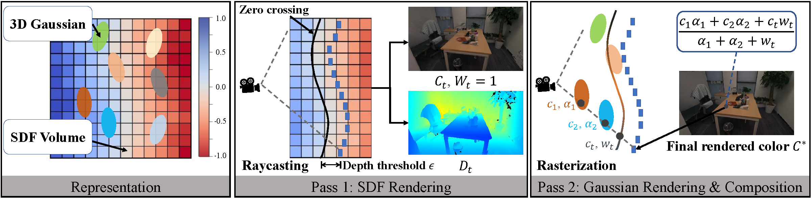
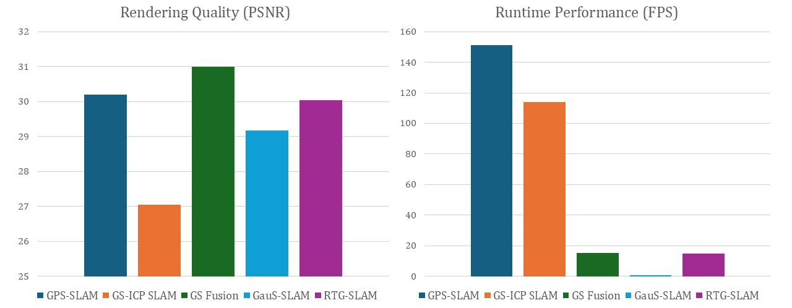

Overview

While recent Gaussian-based SLAM methods achieve photorealistic reconstruction from RGB-D data, their computational performance remains a critical bottleneck. State-of-the-art techniques operate at less than 20 fps, significantly lagging behind geometry-based approaches like KinectFusion (hundreds of fps). This limitation stems from the heavy computational burden: modeling scenes requires numerous Gaussians and complex iterative optimization to fit RGB-D data; insufficient Gaussian counts or optimization iterations cause severe quality degradation. To address this, we propose a Gaussian-SDF hybrid representation, combining a colorized signed distance field (SDF) for smooth geometry and appearance with 3D Gaussians to capture underrepresented details. The SDF is efficiently constructed via RGB-D fusion (as in geometry-based methods), while Gaussians undergo iterative optimization. Our representation enables significant Gaussian reduction (50% fewer) by avoiding full-scene Gaussian modeling, and efficient Gaussian optimization (75% fewer iterations) through targeted appearance refinement. Building upon this representation, we develop GPS-SLAM (Gaussian-plus-SDF SLAM), a real-time 3D reconstruction system achieving over 150 fps on real-world Azure Kinect sequences, faster by an order-of-magnitude than state-of-the-art techniques while maintaining comparable reconstruction quality.


@misc{peng2025gpsslam,
title={Gaussian-Plus-SDF SLAM: High-fidelity 3D Reconstruction at 150+ fps},
author={Zhexi Peng and Kun Zhou and Tianjia Shao},
year={2025},
eprint={2509.11574},
archivePrefix={arXiv},
primaryClass={cs.CV},
url={https://arxiv.org/abs/2509.11574},
}